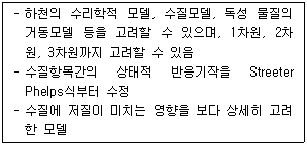
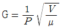
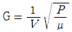
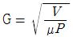
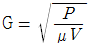
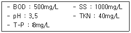
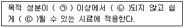

수질환경산업기사 (2015-05-31 기출문제)
1과목: 수질오염개론
1. 염소소독시 pH가 높을 때 가장 잘 일어나는 반응은?
- HOCl → H+ + OCl-
- Cl2 + H2O → HOCl + HCl
- H+ + OCl- → HOCl
- HOCl + HCl → Cl2 + H2O
(정답률: 69%)

2. 우수(雨水)에 대한 설명 중 틀리게 기술된 것은?
- 우수의 주성분은 육수(陸水) 보다는 해수(海水)의 주성분과 거의 동일하다고 할 수 있다.
- 해안에 가까운 우수는 염분함량의 변화가 크다.
- 용해성분이 많아 완충작용이 크다.
- 산성비가 내리는 것은 대기오염물질인 NOx, SOx 등의 용존성분 때문이다.
(정답률: 79%)
3. 화학합성 자가영양미생물계의 에너지원과 탄소원으로 가장 옳은 것은?
- 빛, CO2
- 유기물의 산화환원반응, 유기탄소
- 빛, 유기탄소
- 무기물의 산화환원반응, CO2
(정답률: 61%)
4. 물의 물리 화학적 특성에 관한 설명으로 옳지 않은 것은?
- 순수한 물의 무게는 약 4℃에서 최대의 밀도를 가지며 온도가 상승하거나 하강하면 그 체적은 증대하여 일정 체적 당 무게는 감소한다.
- 액체 표면에 작용하는 분자 간의 힘인 표면 장력은 수온이 증가하고 불순물의 농도가 높을수록 감소한다.
- 물의 점성은 분자상호간의 인력 때문에 생기며 층간의 전단응력으로 점성도를 나타내게 되는데, 수온이 증가하면 점성도도 증가한다.
- 물의 융점(melting point)과 비점(boiling point)은 물과 유사한 화합물(H2S, HF, CH4)에 비해 매우 높다.
(정답률: 72%)
5. 해수의 온도와 염분의 농도에 의한 밀도차에 의해 형성되는 해류는?
- 조류
- 쓰나미
- 상승류
- 심해류
(정답률: 60%)
6. 다음과 같은 용액을 만들었을 때 몰농도가 가장 큰 것은? (단, Na=23, S=32, Cl=35.5)
- 3.5L 중 NaOH 150g
- 30mL 중 H2SO4 5.2g
- 5L 중 NaCl 0.2kg
- 100mL 중 HCl 5.5g
(정답률: 71%)
7. Bacteria 18g의 이론적인 COD는? (단, bacteria의 분자식은 C5H7O2N, 질소는 암모니아로 분해됨을 기준으로 함.)
- 약 25.5g
- 약 28.8g
- 약 32.3g
- 약 37.5g
(정답률: 66%)
8. 해수에 관한 설명으로 옳은 것은?
- 해수의 밀도는 담수보다 작다.
- 염분은 적도해역에서 높고, 남·북 양극해역에서 다소 낮다.
- 해수의 Mg/Ca비는 담수의 Mg/Ca비 보다 작다.
- 수심이 깊을수록 해수 주요 성분 농도비의 차이는 줄어든다.
(정답률: 72%)
9. 다음 중 환경미생물에 대한 설명 중 틀린 것은?
- bacteria는 단세포 원핵성 진정세균으로, 형상에 따라 막대형, 구형, 나선형 및 사상형으로 구분한다.
- Fungi는 다세포, 호기성, 비광합성, 유기종속영양형 진핵원생생물로, 번식방법에 따라 유성, 무성, 분열, 발아, 포자형성으로 분류한다.
- Algae는 단세포 또는 다세포의 유기영양형 광합성 원생동물이다.
- Protozoa는 세포벽이 없는 단세포 진핵 미생물로, 대부분이 호기성 또는 임의성을 뛴 혐기성 화학합성 종속영양 생물이다.
(정답률: 68%)
10. 다음은 하천의 수질 모델링에 관한 설명이다. 가장 적합한 모델은?

- QUAL-Ⅰ model
- WQRRS model
- QUAL-Ⅲ model
- WASP5 model
(정답률: 66%)
11. 다음은 부영양화에 관해 기술한 것이다. 옳은 것은?
- 호수의 부영양화 현상은 호수의 온도성층에 의해 크게 영향을 받는다.
- 식물성플랑크톤의 생장에 제한하는 요소가 되는 영양식물은 질소와 인이며 이 중 질소가 더 중요한 제한물질이다.
- 부영양호는 비옥한 평야이나 산간에 많이 위치하며 호수는 수심이 깊고 식물성 플랑크톤의 증식으로 녹색 또는 갈색으로 흐리다.
- 부영양화에 큰 영향을 미치는 질소와 인은 상대적인 비율 조성이 매우 중요한데, 일반적으로 식물성 플랑크톤이나 수초생체의 N:P의 비율은 중량비로서 16:1로 일정하게 유지되어야 한다.
(정답률: 46%)
12. 적조 발생지역과 가장 거리가 먼 것은?
- 정체 수역
- 질소, 인 등의 영양염류가 풍부한 수역
- upwelling 현상이 있는 수역
- 갈수기시 수온, 염분이 급격히 높아진 수역
(정답률: 72%)
13. Ca++농도가 300mg/L일 때 이것은 몇 meq/L가 되는가? (단, Ca 원자량 = 40)
- 5
- 10
- 15
- 30
(정답률: 66%)
14. 수량 10000m3/day의 오수를 어떤 하천에 방류하였다. 이 하천은 BOD가 3mg/L 이고, 유량이 3000000m3/day이며, 방류시킨 오수가 하천수와 완전히 혼합되었을 때 하천의 BOD가 1mg/L 높아 졌다고 하면 오수의 BOD 부하량은? (단, 오수와 혼합 이후의 하천의 BOD 절대량에는 변화가 없다고 한다.)
- 0.58ton/day
- 1.52ton/day
- 2.35ton/day
- 3.04ton/day
(정답률: 58%)
15. 농업용수의 수질 평가시 사용되는 SAR(Sodium Adsorption Ratio) 산출식에 관련된 원소로만 짝지어진 것은?
- Na, Ca, Mg
- Mg, Ca, Fe
- K, Ca, Mg
- Na, Al, Mg
(정답률: 86%)
16. 탄광폐수가 하천이나 호수, 저수지에 유입되어 유발되는 오염의 형태와 가장 거리가 먼 것은?
- 부식성이 높은 수질이 될 수 있다.
- 대체적으로 물의 pH를 낮춘다.
- 비탄산 경도를 높이게 된다.
- 일시경도를 높이게 된다.
(정답률: 60%)
17. 모든 진핵생물이 가지고 있는 세포소기관(organelles)은?
- 핵막
- 미토콘드리아
- 리보좀
- 세포벽
(정답률: 61%)
18. 다음의 용어에 대한 설명 중 틀린 것은?
- 독립영양계 미생물이란 CO2를 탄소원으로 이용하는 미생물이다.
- 종속영양계 미생물이란 유기탄소를 탄소원으로 이용하는 미생물을 말한다.
- 화학합성독립영양계 미생물은 유기물의 산화환원반응을 에너지원으로 한다.
- 광합성독립영양계 미생물은 빛을 에너지원으로 한다.
(정답률: 69%)
19. 오염물질이 수중에서 확산 혼합되는 현상의 원인과 관계가 없는 것은?
- 브라운 운동
- 난류
- 수온에 의한 밀도류
- 용존산소의 농도
(정답률: 65%)
20. pH 2.8인 용액중의 [H+]은 몇 mole/L인가?
- 1.58 × 10-3
- 2.58 × 10-3
- 3.58 × 10-3
- 4.58 × 10-3
(정답률: 71%)
2과목: 수질오염방지기술
21. 폐수유량이 3000m3/day, 부유고형물의 농도가 200mg/L이다. 공기부상시험에서 공기/고형물비가 0.03 일 때 최적의 부상을 나타내며, 이 때 공기용해도는 18.7mL/L이고, 공기용존비가 0.5이다. 부상조에서 요구되는 압력은? (단, 비순환식 기준)
- 약 2.0atm
- 약 2.5atm
- 약 3.0atm
- 약 3.5atm
(정답률: 57%)
22. 활성슬러지법에서 폭기조로 유입되는 폐수량이 500m3/day, SVI 120인 조건에서 혼합액 1L를 30분간 침전했을 때 300mL가 침전(침전슬러지 용적) 되었다면 폭기조의 MLSS 농도(mg/L)는?
- 1500
- 2000
- 2500
- 3000
(정답률: 62%)
23. 2000명이 살고 있는 지역에서 1일에 BOD 150kg이 하천으로 유입되고 있다. 가정하수로 1인당 1일 BOD 50g이 배출된다면 이 하천의 유입 상태를 가장 적절하게 나타낸 것은?
- 가정하수만 유입되고 있다.
- 가정하수와 폐수가 유입되고 있다.
- 가정하수와 지하수가 유입되고 있다.
- 가정하수와 우수가 유입되고 있다.
(정답률: 71%)
24. NH4+가 미생물에 의해 NO3-로 산화될 때 pH의 변화는?
- 감소한다.
- 증가한다.
- 변화없다.
- 증가하다 감소한다.
(정답률: 71%)
25. 1L 실린더의 250mL 침전 부피 중 TSS 농도가 3⑤0mg/L로 나타나는 폭기조 혼합액의 SVI(mL/g)는?
- 62
- 72
- 82
- 92
(정답률: 64%)
26. 산화지를 이용하여 유입량 2000m3/day이고, BOD와 SS 농도가 각각 100mg/L인 폐수를 처리하고자 한다. 산화지의 BOD 부하율이 2g BOD/m2·day로 할 때 폐수의 체류시간은? (단, 장방형이며 산화지 깊이2m)
- 80days
- 100days
- 120days
- 140days
(정답률: 57%)
27. 카드뮴 함유폐수의 처리방법과 가장 거리가 먼 것은?
- 수산화물 침전법
- 황화물 침전법
- 질화물 침전법
- 이온교환법
(정답률: 49%)
28. 폐수 플럭 형성탱크에서 속도구배(G), 유체의 점도(μ), 소요동력(P)과 탱크부피(V)의 관계식 표현이 적절한 것은? (단, 단위는 적절하다고 가정함.)




(정답률: 80%)
29. 최종침전지에서 발생하는 침전성이 우수한 슬러지의 부상(sludge rising) 원인을 가장 알맞게 설명한 것은?
- 침전조의 슬러지 압밀 작용에 의한다.
- 침전조의 탈질화 작용(denitrification)에 의한다.
- 침전조의 질산화 작용(nitrification)에 의한다.
- 사상균류(flamentus bacteria)의 출현에 의한다.
(정답률: 65%)
30. 무기계 수은 농도가 20mg/L인 폐수 500m3이 있다. 황화나트륨(Na2S·9H2O)을 가하여 침전 제거 하고자 하는 경우, 황화나트륨의 소요량(kg)은? (단, 여유율은 20%이고, 원자량 Hg : 200, Na : 23, S : 32, 수은은 100% 처리 기준)
- 11.2
- 12.1
- 14.4
- 16.9
(정답률: 41%)
31. 하수처리를 위한 일차침전지의 설계기준 중 잘못된 것은?
- 유효수심은 2.5~4m를 표준으로 한다.
- 침전시간은 계획1일 최대오수량에 대하여 표면부하율과 유효수심을 고려하여 정하며 일반적으로 2~4시간을 표준으로 한다.
- 표면적부하율은 계획1일 최대오수량에 대하여 분류식의 경우 25~35m3/m2·day, 합류식의 경우는 35~70m3/m2·day로 한다.
- 침전지 수면의 여유고는 40~60cm 정도로 한다.
(정답률: 49%)
32. 다음 중 입자의 침전속도에 가장 큰 영향을 미치는 것은? (단, 기타 조건은 동일하며 침전속도는 스토크법칙에 따른다.)
- 입자의 밀도
- 입자의 직경
- 처리수의 밀도
- 처리수의 점성도
(정답률: 54%)
33. 산업단지내 발생되는 폐수를 폐수처리시설을 거쳐 인근하천으로 방류한다. 처리시설로 유입되는 폐수의 유량은 20000m3/day, BOD농도는 200mg/L이고, 인근 하천의 유량은 10m3/sec, BOD 농도는 0.5mg/L이다. 하천 방류지점의 BOD 농도는 0.5mg/L이다. 하천 방류지점의 BOD농도를 1mg/L로 유지하고자 할 때 폐수처리시설에서의 BOD 최소 제거 효율은? (단, 폐수처리시설 방류수는 방류 직후 완전혼합된다.)
- 약 68%
- 약 75%
- 약 82%
- 약 89%
(정답률: 38%)
34. 슬러지의 함수율이 95%로부터 90%로 되면 전체 슬러지의 부피는 몇 % 감소 되는가?
- 5%
- 25%
- 30%
- 50%
(정답률: 68%)
35. 미생물의 고정화를 위한 펠렛(Pellet)재료로서 이상적인 요구조건에 해당되지 않는 것은?
- 기질, 산소의 투과성이 양호한 것
- 압축강도가 높을 것
- 암모니아 분배계수가 낮을 것
- 고정화 시 활성수율과 배양후의 활성이 높을 것
(정답률: 72%)
36. 축산폐수 처리에 대한 설명 중 잘못된 것은?
- BOD 농도가 높아 생물학적 처리가 효과적이다.
- 호기성 처리공정과 혐기성 처리공정을 조합하면 효과적이다.
- 돈사폐수의 유기물 농도는 돈사형태와 유지관리에 따라 크게 변한다.
- COD 농도가 매우 높아 화학적으로 처리하면 경제적이고 효과적이다.
(정답률: 69%)
37. 어떤 도시의 폐수 처리 기본 계획을 위하여 조사한 자료는 다음과 같다. 생활하수와 공장폐수를 혼합하여 공동처리할 경우 처리장에 들어오는 혼합유입수의 BOD 농도는? (단, 계획인구 : 50000인, 계획 1인 1일 오수량 : 450L, 계획 1인 1일 오탁부하량 BOD : 50g, 공장폐수량 : 50000m3/day, 공장폐수 BOD : 500mg/L)
- 350mg/L
- 360mg/L
- 380mg/L
- 390mg/L
(정답률: 47%)
38. 생물막을 이용한 처리공법인 접촉산화법에 관한 설명으로 옳지 않은 것은?
- 분해속도가 낮은 기질제거에 효과적이다.
- 매체에 생성되는 생물량은 부하조건에 의하여 결정된다.
- 미생물량과 영향인자를 정상상태로 유지하기 위한 조작이 어렵다.
- 대규모시설에 적합하고, 고부하시 운전조건에 유리하다.
(정답률: 63%)
39. 어떤 원폐수의 수질분석 결과가 다음과 같을 때 처리방법으로 가장 적절한 것은?

- 중화→침전→생물학적 처리
- 침전→중화→생물학적 처리
- 생물학적 처리→침전→중화
- 침전→생물학적 처리→중화
(정답률: 56%)
40. 다음 액체염소의 주입으로 생성된 유리염소, 결합잔류염소의 살균력이 바르게 나열된 것은?
- HOCl ＞ Chloramines ＞ OCl-
- HOC l ＞OCl- ＞ Chloramines
- OCl- ＞ Chloramines ＞ HOCl
- OCl- ＞ HOCl ＞ Chloramines
(정답률: 80%)
3과목: 수질오염공정시험방법
41. 폐수의 화학적 산소요구량의 측정에 있어서 화학적 산소 요구량이 200mg/L라고 추정된다. 이 때 0.025N KMnO4 용액의 소비량은 5.2mL 이고 공시험치는 0.2mL이다. 시료 몇 mL를 사용해서 시험하는 것이 적절한가? (단, 산성 100℃에서 과망간산칼륨에 의한 화학적산소요구량, f=1)
- 약 35
- 약 25
- 약 15
- 약 5
(정답률: 42%)
42. 4각 웨어의 수두 80cm, 절단의 폭 2.5m 이면 유량(m3/min)은? (단, 유량계수는 1.6이다.)
- 약 2.9
- 약 3.5
- 약 4.7
- 약 4.7
(정답률: 63%)
43. 순수한 물 200mL에 에틸알코올(비중 0.79) 80mL를 혼합하였을 때, 이 용액중의 에틸알코올 농도는 몇 %(중량)인가?
- 약13%
- 약18%
- 약24%
- 약29%
(정답률: 67%)
44. 자외선/가시선 흡광광도계의 근적외부의 광원으로 주로 사용되는 것은?
- 텅스턴램프
- 열음극관
- 중수소방전관
- 중공음극램프
(정답률: 67%)
45. 시안(CN-)을 이온전극법으로 측정할 때 정량한계는?
- 0.01mg/L
- 0.⑤mg/L
- 0.1mg/L
- 0.5mg/L
(정답률: 40%)
46. 페놀류 시험법에서 시료의 전처리에 사용되는 시약이 아닌 것은? (단, 자외선/가시선 분광법 기준)
- 메틸오렌지용액
- 인산
- 황산구리용액
- 암모니아용액
(정답률: 42%)
47. 아연의 정량법인 진콘법에서 2가 망간이 공존하지 않는 경우에 넣지 경우에 넣지 않는 시약은?
- 포수클로랄
- 염화제일주석
- 디에틸디티오카르바민산
- 아스코르빈산나트륨
(정답률: 42%)
48. 시료의 전처리 방법과 가장 거리가 먼 것은?
- 산분해법
- 마이크로파 산분해법
- 용매추출법
- 촉매분해법
(정답률: 62%)
49. 6가크롬(Cr6+)의 측정방법과 가장 거리가 먼 것은? (단, 수질오염공정시험기준 기준)
- 원자흡수분광광도법
- 양극벗김전압전류법
- 자외선/가시선 분광법
- 유도결합플라즈마-원자발광분광법
(정답률: 62%)
50. 다이크롬산칼륨에 의한 화학적 산소요구량 측정시 사용되는 적정액은?
- 티오황산나트륨 용액
- 황산제일철암모늄 용액
- 아황산나트륨 용액
- 수산나트륨 용액
(정답률: 34%)
51. 수질오염공정시험기준에서 진공이라 함은?
- 따로 규정이 없는 한 15mmHg 이하를 말함.
- 따로 규정이 없는 한 15mmH2O 이하를 말함.
- 따로 규정이 없는 한 4mmHg 이하를 말함.
- 따로 규정이 없는 한 4mmH2O 이하를 말함.
(정답률: 82%)
52. 자외선/가시선 분광법에서 흡광도 값이 1 이란 무엇을 의미하는가?
- 입사광의 1%의 빛이 액층에 의해 흡수된다.
- 입사광의 10%의 빛이 액층에 의해 흡수된다.
- 입사광의 90%의 빛이 액층에 의해 흡수된다.
- 입사광의 100%의 빛이 액층에 의해 흡수된다.
(정답률: 68%)
53. 냉증기·원자흡수분광광도법으로 수은을 측정시 시료 내 벤젠, 아세톤 등 휘발성 유기물질을 제거하는 방법으로 가장 적합한 것은?
- 질산 분해 후 헥산으로 추출분리
- 중크롬산칼륨 분해 후 헥산으로 추출분리
- 과망간산칼륨 분해 후 헥산으로 추출분리
- 묽은 황산으로 가열 분해 후 헥산으로 추출분리
(정답률: 57%)
54. 다음은 시료의 전처리 방법 중 “회화에 의한 분해”에 관한 내용이다. ( ) 안에 옳은 것은?

- ㉠ 400℃, ㉡ 휘산, ㉢ 회화
- ㉠ 400℃, ㉡ 회화, ㉢ 휘산
- ㉠ 500℃, ㉡ 휘산, ㉢ 회화
- ㉠ 500℃, ㉡ 회화, ㉢ 휘산
(정답률: 63%)
55. 수욕상 또는 수욕상에서 가열한다는 말은 따로 규정이 없는 한 수온 몇 ℃에서 가열함을 뜻하는가?
- 100℃
- 110℃
- 120℃
- 180℃
(정답률: 77%)
56. 다이페닐카바자이드와 반응하여 생성되는 적자색 착화합물의 흡광도를 540nm에서 측정하여 정량하는 항목은?
- 구리
- 카드뮴
- 크롬
- 철
(정답률: 48%)
57. 기체크로마토그래프 분석에 사용되는 검출기 중 유기할로겐 화합물, 니트로화합물 및 유기금속화합물을 선택적으로 검출하는데 가장 적절한 것은?
- 전자포획형검출기
- 열전도도검출기
- 불꽃광도형검출기
- 불꽃이온화검출기
(정답률: 57%)
58. 메틸렌 블루에 의해 발색시킨 후 자외선/가시선 분광법으로 측정할 수 있는 항목은?
- 음이온 계면활성제
- 휘발성 탄화수소류
- 알킬수은
- 비소
(정답률: 58%)
59. 시료채취시의 유의사항에 관련된 설명으로 옳은 것은?
- 휘발성유기화합물 분석용 시료를 채취할 때에는 뚜껑의 격막을 만지지 않도록 주의하여야 한다.
- 유류 물질을 측정하기 위한 시료는 밀도차를 유지하기 위해 시료용기에 70~80% 정도를 채워 적정공간을 확보하여야 한다.
- 지하수 시료는 고여 있는 물의 10배 이상을 퍼낸 다음 새로 고이는 물을 채취한다.
- 시료채취량은 보통 5~10L 정도 이어야 한다.
(정답률: 59%)
60. 인산염인의 자외선/가시선분광법에 대한 설명으로 틀린 것은?
- 이염화주석환원법 및 아스코르빈산환원법이 있다.
- 환원하여 생성된 몰리브텐 청의 흡광도를 690nm 또는 880nm에서 측정한다.
- 발색제를 넣은 다음 흡광도 측정시까지 소요시간은 30~60분이다.
- 정량한계는 0.003mg/L이며, 정밀도는 ±25%이다.
(정답률: 41%)
4과목: 수질환경관계법규
61. 환경부장관은 비점오염원 관리지역을 지정·고시한 때에는 비점오염원 관리대책을 관계 중앙행정기관의 장 및 시·도지사와 협의하여 수립하여야 한다. 다음 중 비점오염원 관리대책에 포함되어야 하는 사항과 가장 거리가 먼 것은?
- 관리대상 수질오염물질 발생시설 현황
- 관리대상 수질오염물질의 종류 및 발생량
- 관리대상 수질오여물질의 발생 예방 및 저감방안
- 관리목표
(정답률: 62%)
62. 시·도지사 등이 환경부장관에게 보고해야 할 사항(위임업무 보고 사항) 중 보고횟수가 연4회에 해당되는 것은?
- 과징금 징수실적 및 체납처분 현황
- 폐수위탁사업장 내 처리현황 및 처리실적
- 배출부과금 징수실적 및 체납처분 현황
- 비점오염원의 설치신고 및 방지시설 설치 현황 및 행정처분 현황
(정답률: 56%)
63. 비점오염원 관리지역에 대한 설명 중 틀린 것은?
- 환경부장관은 비점오염원에서 유출되는 강우유출수로 인해 하천·호소 등의 이용목적. 주민의 건강·재산이나 자연생태계에 중대한 위해가 발생하거나 발생할 우려가 있는 지역에 대해 관할 시·도지사와 협의하여 비점오염원 관리지역을 지정할 수 있다.
- 시·도지사는 관할구역 중 비점오염원의 관리가 필요하다고 인정되는 지역에 대해 환경부장관에게 관리지역으로의 지정을 요청할 수 있다.
- 관리지역의 지정기준, 지정절차, 그 밖의 필요한 사항은 환경부령으로 정한다.
- 환경부장관은 관리지역의 지정사유가 없어졌거나 목적을 달성할 수 없는 등 지정의 해제가 필요하다고 인정되는 경우에는 관리지역의 전부 또는 일부에 대하여 그 지정을 해제할 수 있다.
(정답률: 58%)
64. 오염총량관리기본방침에 포함되어야 하는 사항과 가장 거리가 먼 것은?
- 오염원의 조사 및 오염부하량 선정방법
- 총량관리 단위유역의 자연 지리적 오염원 현황과 전망
- 오염총량관리의 대상 수질오염물질 종류
- 오염총량관리의 목표
(정답률: 60%)
65. 비점오염원의 변경신고를 하여야 하는 경우에 대한 기준으로 옳은 것은?
- 총 사업면적·개발면적 또는 사업장 부지면적이 처음 신고면적의 100분의 10이상 증가하는 경우
- 총 사업면적·개발면적 또는 사업장 부지면적이 처음 신고면적의 100분의 15이상 증가하는 경우
- 총 사업면적·개발면적 또는 사업장 부지면적이 처음 신고면적의 100분의 25이상 증가하는 경우
- 총 사업면적·개발면적 또는 사업장 부지면적이 처음 신고면적의 100분의 30이상 증가하는 경우
(정답률: 74%)
66. 수질오염경보 중 조류경보에서 '조류경보' 단계 발령시 조치사항에 해당되지 않는 것은? (단, 취수장, 정수장 관리자 기준)
- 취수구와 조류가 심한 지역에 대한 방어막 설치 등 조류제거 조치 실시
- 정수의 독소분석 실시
- 조류증식 수심 이하로 취수구 이동
- 정수처리 강화(활성탄 처리, 오존처리)
(정답률: 63%)
67. 대권역 수질 및 수생태계 보전계획에 포함되어야 하는 사항과 가장 거리가 먼 것은?
- 상수원 및 물 이용현황
- 점오염원, 비점오염원 및 기타 수질오염원별 수질오염 저감시설 현황
- 점오염원, 비점오염원 및 기타 수질오염원의 분포현황
- 점오염원, 비점오염원 및 기타 수질오염원에서 배출되는 수질오염물질의 양
(정답률: 52%)
68. 자연형 비점오염저감시설의 종류가 아닌 것은?
- 여과형 시설
- 인공습지
- 침투시설
- 식생형 시설
(정답률: 70%)
69. 수질 및 수생태계 환경기준 중 하천에서 사람의 건강보호기준으로 틀린 것은?
- 1,4-다이옥세인 : 0.⑤mg/L
- 수은 : 0.⑤mg/L 이하
- 납 : 0.⑤mg/L 이하
- 6가 크롬 : 0.⑤mg/L 이하
(정답률: 71%)
70. 공동하수처리구역 안에 배출시설을 설치하고자 하는 자 및 폐수를 배출하고자 하는 자 중 대통령령으로 정하는 자는 당해 사업장에서 배출되는 폐수를 종말처리시설에 유입하여야 하며 이에 필요한 배구관거 등 배수설비를 설치하여야 한다. 이 배수설비의 설치방법, 구조기준에 관한 내용으로 옳지 않은 것은?
- 시간당 최대폐수량이 일평균 폐수량의 2배 이상인 사업자는 자체적으로 유량조정조를 설치하여야 한다.
- 순간수질과 일평균수질과의 격차가 리터당 100밀리그램 이상인 시설의 사업자는 자체적으로 유량조정조를 설치하여야 한다.
- 배수관 입구에는 유효간격 1.0밀리미터 이하의 스크린을 설치하여야 한다.
- 배수관의 관경은 내경 150밀리미터 이상으로 하여야 한다.
(정답률: 52%)
71. 수질 및 수생태계 보전에 관한 법률에서 사용하는 용어의 뜻으로 틀린 것은?
- 폐수 : 물에 액체성 또는 고체성의 수질오염물질이 섞여 있어 그대로 사용할 수 없는 물을 말한다.
- 수질오염물질 : 수질오염의 요인이 되는 물질로서 환경부령으로 정하는 것을 말한다.
- 불투수층 : 빗물 또는 눈 녹은 물 등이 지하로 스며들 수 없게 하는 아스팔트, 콘크리트 등으로 포장된 도로, 주차장, 보도 등을 말한다.
- 강우유출수 : 점오염원 및 비점오염원의 수질오염물질이 섞여 유출되는 빗물 또는 눈 녹은 물 등을 말한다.
(정답률: 69%)
72. 사업자 및 배출시설과 방지시설에 종사하는 사람은 배출시설과 방지시설의 운영·관리를 위한 환경기술인의 업무를 방해하여서는 아니되며 그로부터 업무 수행에 필요한 요청을 받았을 때에는 정당한 사유가 없으면 이에 따라야 한다. 이를 위반하여 환경기술인의 업무를 방해 하거나 환경기술인의 요청을 정당한 사유 없이 거부한 자에 대한 벌칙 기준은?
- 100만원 이하의 벌금
- 200만원 이하의 벌금
- 300만원 이하의 벌금
- 500만원 이하의 벌금
(정답률: 73%)
73. 환경부 장관이 설치·운영하는 측정망의 종류에 해당되지 않는 것은?
- 비점오염원에서 배출되는 비점오염물질 측정망
- 공공수역 유해물질 측정망
- 퇴적물 측정망
- 도심하천 측정망
(정답률: 50%)
74. 환경부장관이 공공수역을 관리하는 자에게 수질 및 수생태계의 보전을 위해 필요한 조치를 권고하려는 경우 포함되어야 할 사항과 가장 거리가 먼 것은?
- 수질 및 수생태계를 보전하기 위한 목표에 관한 사항
- 수질 및 수생태계에 미치는 중대한 위해에 관한 사항
- 수질 및 수생태계를 보전하기 위한 구체적인 방법
- 수질 및 수생태계의 보전에 필요한 재원의 마련에 관한 사항
(정답률: 56%)
75. 환경기준 중 수질 및 수생태계(하천)의 생활환경기준으로 옳지 않은 것은? (단, 등급은 매우 나쁨(Ⅵ))
- COD : 11mg/L 초과
- T-P : 0.5mg/L 초과
- SS : 100mg/L 초과
- BOD : 10mg/L 초과
(정답률: 57%)
76. 오염할당사업자 등에 대한 과징금 부과기준에서 사업장 규모별 부과계수로 옳은 것은?
- 제1종 사업장 3.0
- 제2종 사업장 2.0
- 제3종 사업장 1.0
- 제4종 사업장 0.5
(정답률: 71%)
77. 폐수처리업의 등록기준 중 폐수재이용업의 기술능력 기준으로 옳은 것은?
- 수질환경산업기사, 화공산업기사 중 1명 이상
- 수질환경산업기사, 대기환경산업기사, 화공산업기사 중 1명 이상
- 수질환경기사, 대기환경기사 중 1명 이상
- 수질환경산업기사, 대기환경기사 중 1명이상
(정답률: 73%)
78. 다음 수질오염방지시설 중 화학적 처리시설에 해당되는 것은?
- 접촉조
- 살균시설
- 안정조
- 폭기시설
(정답률: 73%)
79. 2회 연속 채취시 클로로필-a 농도 15mg/m3 이상이고, 남조류 세포수 500세포/mL 이상인 경우의 수질오염경보 단계는? (단, 조류 경보 기준)
- 조류 주의보
- 조류 경보
- 조류 경계
- 조류 대발생
(정답률: 55%)
80. 수질오염물질의 배출허용기준 중 틀린 것은?
- 1일 폐수배출량이 2000m3 미만인 경우 BOD기준은 청정지역과 가 지역은 각각 40mg/L 이하, 80mg/L이하이다.
- 1일 폐수배출량이 2000m3 미만인 경우 COD기준은 나 지역과 특례 지역은 각각 130mg/L 이하, 40mg/L이하이다.
- 1일 폐수배출량이 2000m3 이상인 경우 BOD기준은 청정지역과 가 지역은 각각 30mg/L 이하, 60mg/L이하이다.
- 1일 폐수배출량이 2000m3 이상인 경우 COD기준은 청정지역과 가 지역은 각각 50mg/L 이하, 90mg/L이하이다.
(정답률: 47%)